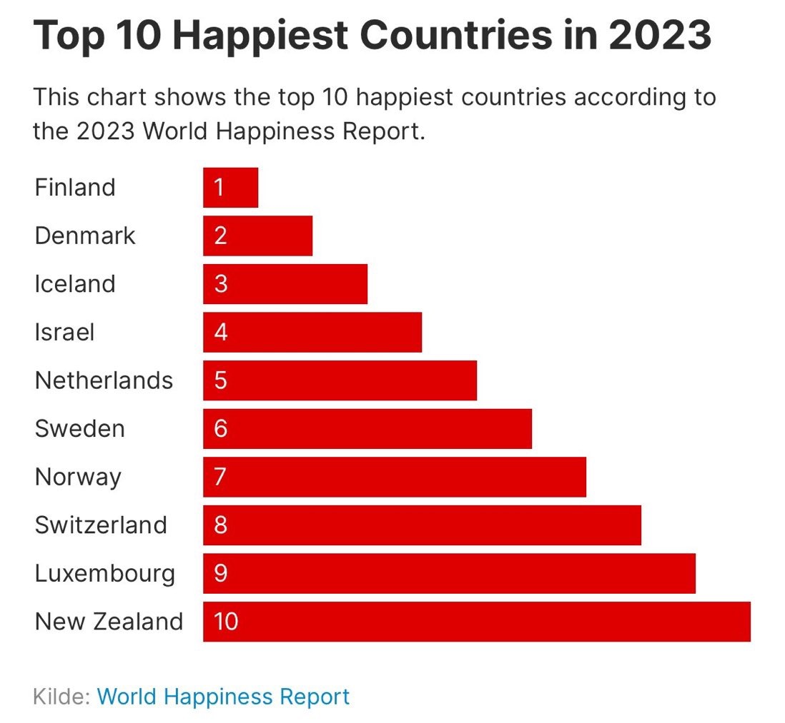

Data Visualisation Portfolio
A collection of coding challenges (CC) exploring data visualisation, web scraping, APIs, and interactive charts.
Coding Challenge 1: Hosting
Task: Set up a Github account and live page using GitHub Pages; add two charts using the vegaEmbed function.
This chart shows how real GDP per capita has evolved across six countries over time.
This chart tracks inflation rates in four G7 economies—France, Germany, the United Kingdom, and the United States.
Coding Challenge 2: Building
Task: Build two charts using the Economics Observatory "create" tool and embed them on the page.
This chart tracks the share of total U.S. net worth held by the top 0.1%, using FRED data.
This visualisation shows the dramatic growth of renewable energy output in China, measured in gigawatt-hours (GWh).
Coding Challenge 3: Debating
Task: Produce two charts that support or refute a topic of policy debate.
Policy Position: Governments should prioritise growth-oriented tax cuts even when unfunded, as economic expansion will generate offsetting revenues.
Commentary: Unfunded tax cuts in Truss's mini-budget fueled inflation fears, prompting steeper rate hikes that stifled growth.
Commentary: The mini-budget spiked gilt yields, crashed investor confidence, and proved unfunded cuts destabilise markets rather than generate revenues.
Coding Challenge 4: Replication
Task: Find a published chart, replicate it, and then improve on it.
This chart shows the top 10 happiest countries from the 2023 World Happiness Report, but has two issues: the bars are in reverse order (with #1 Finland having the shortest bar), and without showing the actual happiness scores or scale, it exaggerates what are small differences between similarly happy countries.

I replicated the same chart with its issues in my visual style to suit my website.
I replaced misleading rank bars with actual happiness scores, showing true differences and correct direction for clearer interpretation.
Coding Challenge 5: Accessing Data
Task: Use an API and a web scraper to gather data, then create visualisations.
API Description: The CoinGecko API provides cryptocurrency market data.
https://api.coingecko.com/api/v3/coins/markets?vs_currency=usd&order=market_cap_desc&per_page=10
Commentary: Scraped 39 years of Forbes data from Wikipedia. Main challenge: identifying correct years and handling duplicate tables.
Coding Challenge 6: Loops — Build a Dashboard
Task: Use a loop to batch download six different series and display them as a dashboard.
This dashboard displays six key US economic indicators (GDP, unemployment, CPI, Fed Funds Rate, 10-Year Treasury, and 30-Year Mortgage rates) from 2015 to 2025.
Coding Challenge 7: Maps
Task: Produce two maps — one of Scotland and one of Wales. One should be a coordinates map, the other a choropleth.
This chart shows the geographic distribution of schools across Scotland, with each circle representing an individual school plotted on a map of Scottish local authority districts. Hovering over points reveals further details.
This chart shows fertility rates across Welsh local authorities in 2024, with each area shaded in blue according to its fertility rate.
Coding Challenge 8: Big Data
Task: Produce two charts using either of the two UK prices datasets provided in class.
This chart shows the average prices of Full English breakfast components in the UK over time, with a stacked area visualisation breaking down costs by individual items.
This interactive map shows average pint prices across UK regions with a year slider from 2000 to 2024.
Coding Challenge 9: Interactive Charts
Task: Create two interactive charts with controls beyond simple hover/tooltips.
The chart displays the Shiller CAPE ratio from 1871 to 2025, showing market valuations over time with coloured risk zones and a historical mean line at 17. Click and drag on the bottom brush selector to zoom into specific time periods.
The chart displays market concentration in the S&P 500 from the Magnificent 7 tech stocks versus the rest of the market over time, with an interactive selector to focus on individual stock contributions.
Coding Challenge 10: Advanced Analytics & Machine Learning
Task: Produce a chart that uses advanced analytics, and then conduct an applied data analysis using machine learning techniques.
This interactive bubble chart plots the top S&P 500 companies by earnings growth versus valuation (P/E ratio). You can filter to show "Magnificent 7" companies only.
This regression shows the relationship between state GDP per capita and AI usage index.